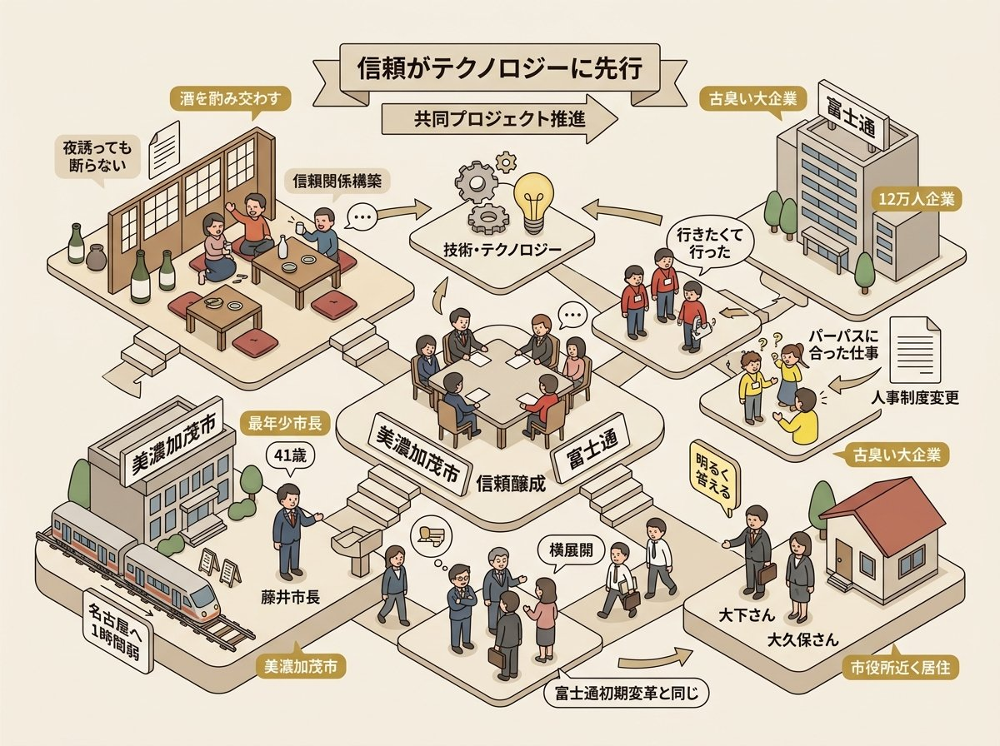
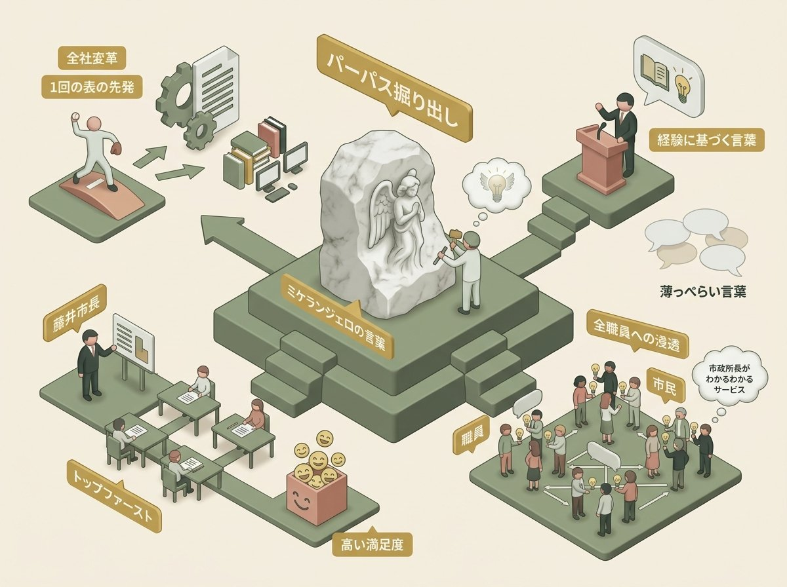
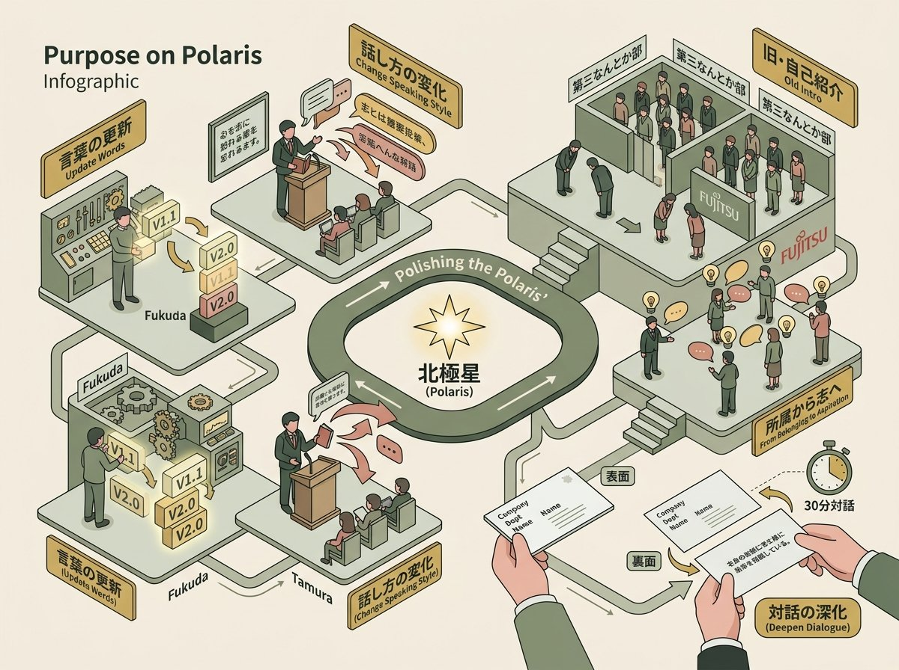
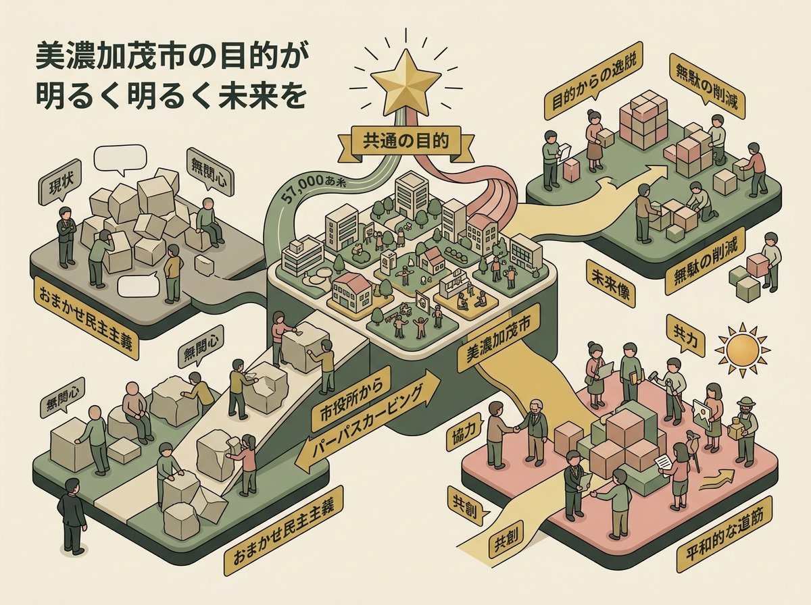

FXN（富士通トランスフォーメーションナウ）——3ヶ月に1度、富士通の全社変革の現在地を社内外に向けて発信するイベントである。サイクル18を数えたこの日、川崎の会場に岐阜県美濃加茂市の市長・藤井浩人が招かれた。テーマは「デジタルだけじゃない？ 共感とパーパスがつむぐ新しい地域DX」。
デジタルトランスフォーメーションを冠するイベントでありながら、「デジタルだけじゃない」と銘打つ。この逆説的なタイトルの背後には、富士通自身が5年にわたる全社変革の中で体得してきた一つの確信がある。変革の起点はテクノロジーではなく、人の思いである、という確信だ。
人口5万7千人、外国人住民が10%を占める岐阜県の小都市に、富士通から2人の社員が「中に入って」やってきた。彼らが最初にやったのは、デジタル化でもシステム導入でもなく、夜の居酒屋で酒を酌み交わすことだった。80分の対話は、そこから始まる。

美濃加茂市は岐阜県のちょうど真ん中の南部に位置する。名古屋まで電車で1時間弱、かつて富士通の工場があった縁もある町だ。藤井浩人は28歳で全国最年少の市長に選ばれ、今年41歳になる。
藤井浩人
「うちでうまくいけば他の自治体でも横展開できるんじゃないかということもあるので、様々なことにチャレンジしている自治体だというところで、ご理解いただきたいなと」
「うちでうまくいけば他でも横展開できる」——この言葉は、タムラの記憶を刺激した。富士通も変革の初期にまったく同じことを言っていたからだ。12万人の巨大企業と5万7千人の地方都市が、同じ自己認識から出発していた。
美濃加茂市には国の「地域活性化企業人」制度を利用して富士通から2名の社員が常駐していた。しかし、富士通に対する第一印象は決して好意的ではなかった。
藤井浩人
「富士通さんとコラボってきた時は、いや、古臭い大企業さんがね、ベンダー企業さんと何ができるのかなと。なんか協賛金でもいただければありがたいなぐらいの。やっぱり老舗のイメージが強かったのが正直なところだというと、生きて帰れるかわかりませんけど」
では、その印象はどこで変わったのか。藤井が語ったのは、技術の話ではなかった。
藤井浩人
「若い職員に聞いたら、大下さんも大久保さんも、まず酒飲んでくれると。夜誘っても断らないと。市役所から歩いていけるところに住んでいただいて。技術とかテクノロジーがどうのこうのではなくて、やっぱりまず信頼関係を作ることが仕事をする上で大事だっていうことをご理解いただいているというか、むしろ僕も学ぶことができた」
地域活性化企業人制度
総務省が推進する仕組みで、三大都市圏の企業に勤務する人材を、地方自治体が一定期間受け入れる制度。派遣される社員は自治体の職員として業務に当たるため、外部コンサルタントとは異なり、組織の「内側」から変革を推進できる。
この対話の文脈では、単なる人材派遣ではなく「信頼関係の構築装置」として機能していた。市役所から歩いて行ける場所に住み、夜の酒席にも顔を出す。その物理的な近さが、デジタル以前の人間的な結びつきを可能にした。
福田譲
「多分ね、2人ともあれでしょう。行きたくて行ったんでしょう。パーパスに一番合った仕事を、自分で手を挙げて選ぶっていう人事制度に変わってきたことを受けて、やりたくてやってるから、そういう情熱を持ってやるとか、人と人の付き合いを大切にする」
「行きたくて行った」人間と「行かされた」人間では、同じ場所で同じ仕事をしても、まったく異なる関係が生まれる。藤井はその「恥ずかしげもなく語る」姿勢が職員に与えた印象を振り返る。
藤井浩人
「なんでわざわざ来たのって、多分相当聞かれたと思うんですよ。そこをやっぱり的確に、明るく答えられてる。移動する時ってだいたい、どこどこに移動させられたから始まりがちなんですよね。やっぱりそこら辺の印象から違う」

富士通との取り組みの中で、藤井がひときわ強い共鳴を覚えたのが「パーパス」という概念だった。
藤井浩人
「政治家っていうのは政策を語ったり、未来を語るんですけど、その語る口は何に基づいて生まれているのか。薄っぺらい言葉を述べるだけじゃなくて、自分の経験をもとにして人に伝えることが、やっぱ人に伝わることなんじゃないかっていうことを、政治家を十数年やっていて感じる」
藤井浩人
「このパーパスという体系で職員さんに共有することができれば、これは職員さんにとっても良いでしょうし、市民の皆さんにとっても、改めてこの市役所というものを理解してもらえるきっかけになるんじゃないか」
パーパスカービング
富士通が全社変革の中で開発した、個人のパーパス（存在意義）を言語化するためのワークショップ型プログラム。富士通グループ約12万人中10万人が参加。「カービング」は英語の "carve"（彫る、掘り出す）に由来し、パーパスを「外から付け加える」のではなく「内側から掘り出す」ものとして位置づけている。
この対話の文脈では、「押し付けがましさを回避しながら、本質的な価値観を共有する装置」として語られている。藤井が感じていた「小っ恥ずかしさ」——トップが直接「こう生きろ」と言うことへのためらい——を、構造化されたワークショップという形式が解消した。
ミケランジェロの天使、父の彫刻
タムラ
「僕、父親が彫刻家をやってまして。ミケランジェロの言葉の、彫刻家の仕事っていうのは天使の像を作るわけじゃなくて、大理石の中にいる天使を自由にする仕事なんだっていう言葉があるところから、パーパスって掘り出すっていう言葉にしたいっていうので、この名前をつけている」
福田譲
「多分、人間ももともと内面的にはあるんですよね。それがあまりね、言葉になってないとか、徐々に世俗にまみれて忘れていく。それをもう1回ね、垢を落として掘り出すみたいな」
デジタルではないものから変革は始まる
福田は、パーパスカービングを富士通の全社変革における「1回の表の先発ピッチャー」と呼んだ。DXの「先発」が、デジタルとは何の関係もないプログラムだったという事実は、一見すると矛盾に映る。
福田譲
「ギャラップ社の調査によると、日本は情熱を持って職務に当たっている人ってのは世界最低レベルなんですよね。5%から6%しかワクワクドキドキして仕事を楽しんでいないと。そういうマインドのまま変革だって言ってもなかなか変わんないだろうなということで。一体我々何のために仕事してるんだっけっていうのをもう1回思い出そうと」
エンゲージメント（ギャラップ調査）
ギャラップ社は毎年「State of the Global Workplace」レポートを発行し、世界各国の従業員エンゲージメントを調査している。日本の「engaged（熱意ある）」従業員の割合は継続的に一桁台で、調査対象国の中で最低水準に位置する。
この対話の文脈では、福田はこの数字を「変革の前提条件の不在」として引用している。ワクワクしていない人間に「変わろう」と言っても変わらない。だからまず「何のために仕事をしているのか」を思い出すところから始めるしかない。
タムラは、パーパスカービングを富士通に展開する際、あえて「トップファースト」の戦略を取った。美濃加茂市でも同じアプローチが取られ、藤井市長が自ら研修を受け、全350人の職員に実施。匿名アンケートの結果は関係者が「良すぎるんじゃないの」と驚くほどの満足度だった。

パーパスカービングは「一度やって終わり」なのか。この問いに対して、福田は自身の経験を重ねる。
福田譲
「私は5年前に最初やって、去年実は2回目やって、ちょっと言葉をアップデートするかどうか迷って、今のところまだ元のままなんですけど。ITのシステムとかゲームと同じようにバージョンアップさせていくとね、その時々の自分のよりどころにするものを常に持った状態にできる」
タムラ
「実は僕は8年ぐらい同じ言葉なんですけれど、言葉自体はずっと同じなんですよね。ただその言葉をどう話すかの話し方とか、ついてくる言葉みたいなのがずっと変わる」
福田は「言葉をバージョンアップする」、タムラは「言葉は同じでも話し方が変わる」。アプローチは対照的だが、パーパスが生きた関係として持続するものであるという認識は共通している。
壁にぶつかった時こそ
藤井浩人
「ある方が言ってたのがですね、壁にぶつかったときに意味があると思ったって。自分は何のために働いているのかっていうことを思い出して、つらかったときに乗り越えられた。目的がしっかりあれば、じゃあアプローチの仕方変えようっていう発想は出てくる。ここで目的がないと、そこで潰れちゃう」
藤井浩人
「北極星みたいなものがあるんですね」
北極星（ノーススター）
北極星は「目的地」ではなく「方角」である。パーパスもまた、到達すべきゴールではなく、どちらに向かって歩くかを示す方位磁針として機能する。だからこそ、壁にぶつかったときに意味を持つ。ゴールであれば壁は挫折を意味するが、方角であれば壁は「迂回して同じ方向に向かう」きっかけになる。
「部長ってそんな趣味があったんですか」
藤井浩人
「パーパス研修をするだけで、部長ってそんな趣味があったんですかとか、そんな顔してクワガタムシ好きだったんですかとか、そういう話が生まれて、すごく職員さんとの距離が縮まった」
さらに、富士通では社内の自己紹介の作法そのものが変わった。
福田譲
「昔はですね、なんとかかんとか本部の第三なんとかかんとかにいる何々ですとか言われても、正直どんな人か全くわからなかったんですけど、今はこういう形で私のパーパスはって言って自己紹介するのが定着化してきて。何々課の何々さんっていうよりは、こういう思いを持って仕事をしてるなんとかさんっていうね」
「第三なんとかかんとかにいる何々です」から「こういう思いを持って仕事をしているなんとかさん」へ——この変化は、組織における人間の認識単位が「所属」から「志」に移行したことを意味する。
名刺の裏面にパーパスを印刷するバリエーションも生まれた。藤井がその名刺を見て言った。
藤井浩人
「この情報量だと話題がなかなか広がらないですけど、これだったらもうこれでもう20分、30分喋れちゃいます」
名刺の表面——会社名、部署名、名前。それだけでは20分話すのは難しい。しかし裏面にパーパスが一行書いてあるだけで、30分の対話が生まれる。短い言葉が深い対話を引き出すという逆説は、パーパスカービングの力を最も端的に示している。

藤井には、パーパスカービングを市役所内部にとどめず、市民5万7千人に広げたいという野望があった。
藤井浩人
「おまかせ民主主義っていう言葉がまだまだ言われて、自分の地域のことや未来のことが自分ごとになってないっていうのは、どういう未来に進んでいるのかっていう目的が具体化できてなかったり、未来に対して主体性が持ててないんじゃないかなという仮説を持っている。富士通十万人、美濃加茂市5万7千人ですので、市民の皆さんともこのパーパスカービングを何か共有できたら面白いな」
おまかせ民主主義
市民が政治や行政への参加を放棄し、選挙で代表者を選んだ後は「お任せ」にしてしまう状態を指す批判的な表現。藤井は「おまかせ民主主義」の原因を「目的の不在」に求めている。投票率が低いのは政治への不信だけが理由ではなく、「自分の未来に対する主体性」が持てていないからではないか——この仮説は、パーパスの不在が市民の政治参加にまで影響するという、より大きなスケールでの問題提起になっている。
福田譲
「美濃加茂市っていう人がいたとしたら、美濃加茂市さんは人間のどうなりたい人なんだろうというところを考えようと。お互いにそのパーパスの、組織のパーパスと組織のパーパスを重なり合わせたところで、テクノロジーで何ができるんだろうねっていうのが、富士通の興味関心でして」
「美濃加茂市という人がいたとしたら」——組織を人格化するこの問いかけは、抽象的な「ミッション」とは異なる手触りを持つ。
藤井浩人
「行政とかってよく無駄って言われるんですけど、無駄っていう言葉の裏にあるのって、要するに目的から外れてるんじゃないかっていうことがいっぱいある。目的が一緒ならそこは一緒にやろうとすごく平和的な道筋が見えてくる気がしますよね」
「無駄は目的から外れていること」——この定義は鮮やかだ。パーパスが明確であれば、それに沿っているかどうかで「無駄」と「必要」を判断できる。対立の構造は目的の不一致から生まれ、パーパスが可視化されたとき、「競い合い」は「協働」に転じる。
福田譲
「DXでいうと、やっぱりね、DよりXが俄然難しいんですよね。人間、今まで通りが一番安心安全で居心地いいんで、その居心地がいいところから出て行って、物事を変える。そういうところの、ある意味練習としてもね、このパーパスカービングってすごくいいなというふうに改めて思った」
「DよりXが俄然難しい」——DXにおいてデジタル（D）は手段であり、本当に難しいのはトランスフォーメーション（X）の方だ。変わることは怖い。今まで通りが安心だ。その「安心」を手放してでも変わろうとするとき、自分の中にある「なぜ変わるのか」という問いへの答えが必要になる。パーパスカービングは、その答えを自分の内側から掘り出す作業なのだ。
パーパスから始まった80分の対話は、信頼の構築から組織の変革へ、組織から市民へ、市民から教育へと、同心円のように広がっていった。「デジタルだけじゃない」——その言葉は、セッションが終わる頃には、もはや逆説ではなくなっていた。デジタルは手段であり、変革の核心にあるのは、人が自分自身の中にある天使を掘り出し、その天使の名前を他者と共有する、という果てしなく人間的な営みなのだ。